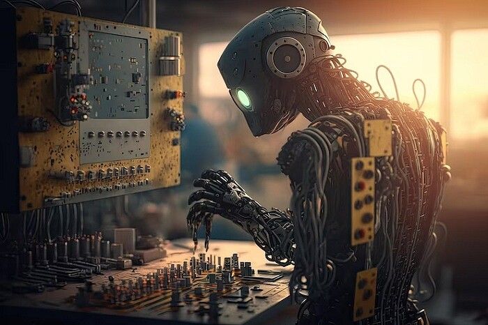
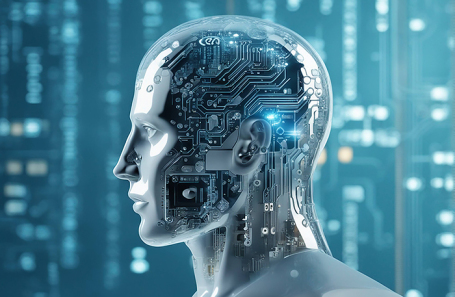
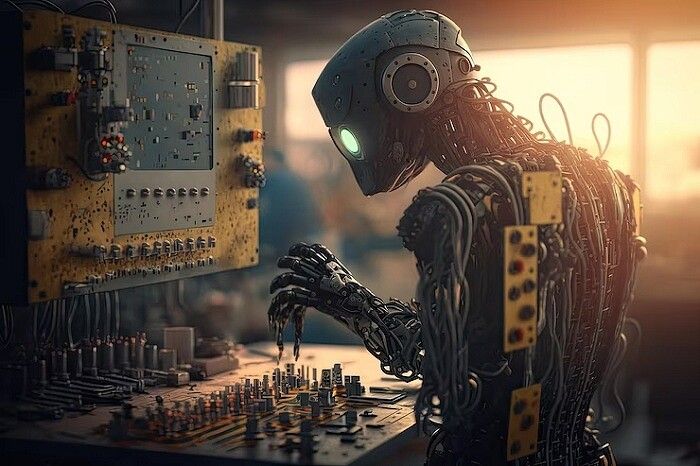
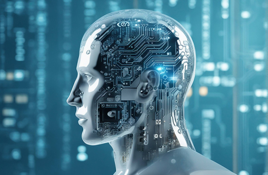

ИИ — это область компьютерных наук, которая фокусируется на создании программ и систем, способных выполнять задачи, обычно требующие интеллекта человека. Основная цель искусственного интеллекта заключается в разработке умных алгоритмов и машин, которые могут решать проблемы, обучаться на опыте и принимать решения в сложных ситуациях. Основные аспекты искусственного интеллекта включают:
Применения искусственного интеллекта охватывают множество областей, включая медицину, финансы, автомобильную промышленность, образование и многое другое. Цель состоит в том, чтобы создать машины, которые могут адаптироваться к новой информации, решать сложные проблемы и действовать аналогично человеческому интеллекту.
У людей уже даже сложилось представление как примерно выглядел бы ИИ в реальном мире. Чаще всего это робот, у которого искуственная кожа, искуственное лицо. Но уже дальше фронтальной части головы у него нету кожи, и заместо мозга, там торчта провода, находится вся техника и все его технологии как робота. (А не в виртуальном)
Вот три примера
 


